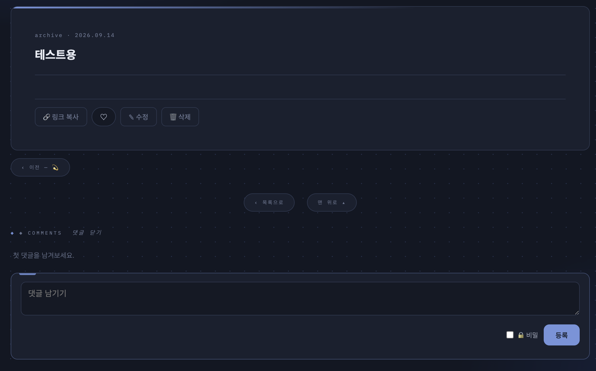

러브로그 · 글쓰기
읽기·수정·삭제·공유
- 글에 이미지가 있으면 목록에 썸네일이 자동으로 붙습니다(테마·레이아웃 → 글 목록에서 끌 수 있습니다). 글 아래 ‹ 이전 / 다음 ›으로 연달아 읽습니다.
- ✎ 수정 — 처음 쓴 그대로 열립니다. 비밀글 수정은 비밀번호를 다시 입력해야 저장.
- 글 아래 「링크 복사」로 그 글의 주소를 바로 공유. ♡ 공감은 다시 누르면 취소.
- ☑ 선택 삭제 — 글 목록·갤러리 머리의 〈☑ 선택〉으로 여러 개 골라 아래 바의 〈🗑 선택 삭제〉. 삭제 전 개수·제목을 한 번 더 확인합니다(되돌릴 수 없음).
- 글·사진이 쌓이면 목록 아래 페이지 번호가 생깁니다(글 12개, 사진은 한 화면 분량씩 — 글 수는 설정 가능).

사진 자리img/ll-read-post.png